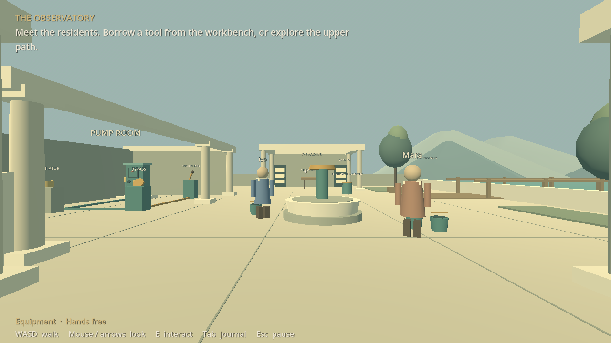
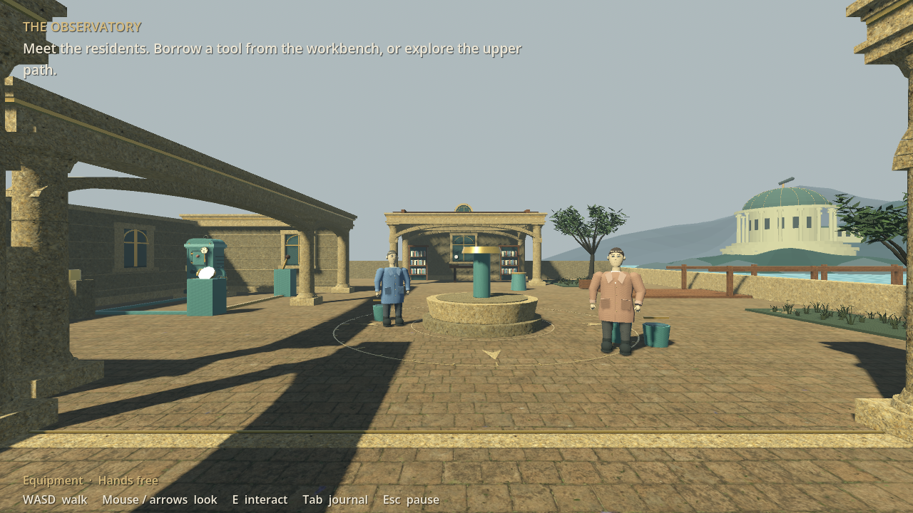
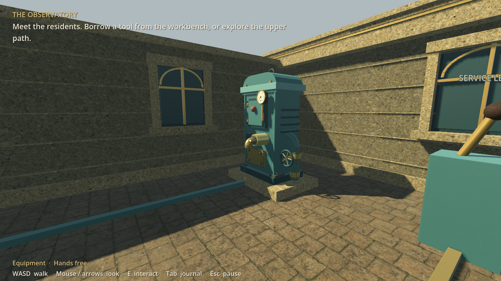
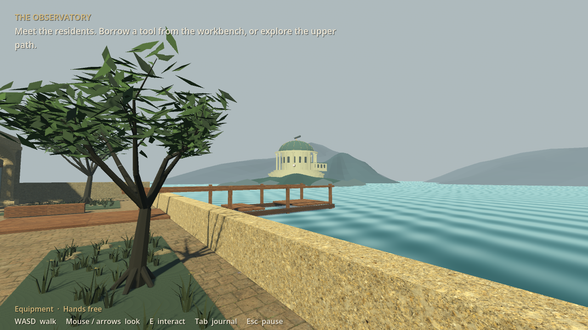

Original blockoutFirst visual passThe work adds photo stone and timber materials, curved masonry, pump hardware, human silhouettes, foliage, water ripples and a distant observatory. It is a step toward the visual direction, with animation and more realistic assets still ahead.


Validation and source record · Cloud PC plan · Play instructions